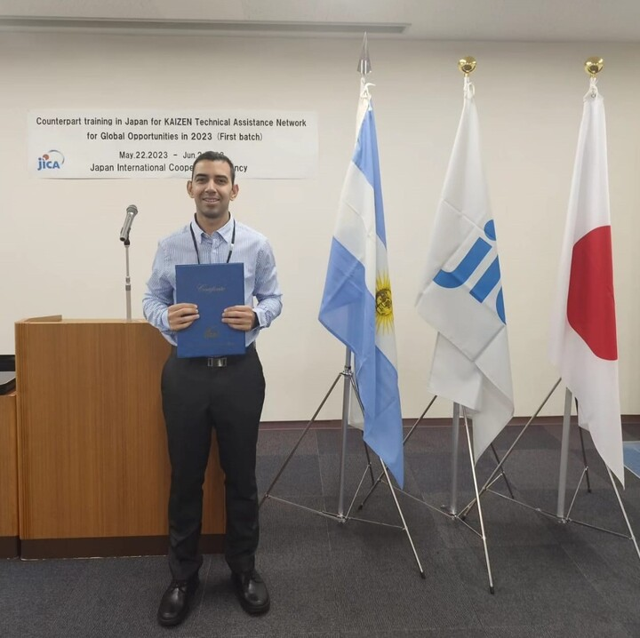
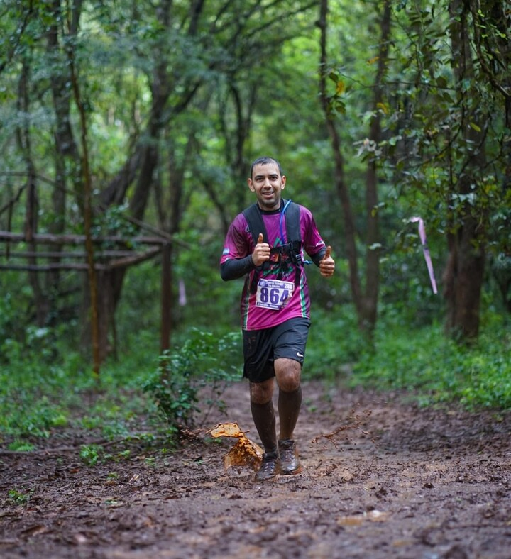

Mi nombre es Raúl Valerio Rolón en el 2024 me recibi de Tecnico Universitario en Programación en la UTN.
Además, desde el 2017 soy Ingeniero Químico y cuento con cinco años de experiencia en consultoría especializada en Mejora Continua (KAIZEN). Durante este tiempo, he aplicado mis habilidades analíticas y de resolución de problemas para optimizar procesos y sistemas productivos. Desde el 2021 estoy certificado como Asesor en Tecnologías de Gestión por el I.N.T.I, lo que me brindó la oportunidad de viajar a PARAGUAY para asesorar a empresas en sus procesos de mejora continua. Además, obtuve una beca para viajar a JAPON con el objetivo de participar en un curso especializado en KAIZEN, ampliando así mi visión y conocimientos en el ámbito internacional. Estas experiencias han enriquecido mi trayectoria profesional y me han permitido desarrollarme de manera integral.
No todo es trabajo y estudio, soy corredor de Trail Running, he participado en numerosas carreras de trail, en desafiantes y diversos terrenos, disfrutando del contacto con la naturaleza. Esta actividad me ha enseñado disciplina, determinación y capacidad para enfrentar retos físicos y mentales.
Estoy en constante búsqueda del mejoramiento continuo tanto en el ámbito profesional como en el personal, aprovechando mis experiencias y habilidades para enfrentar nuevos desafíos con determinación y pasión.